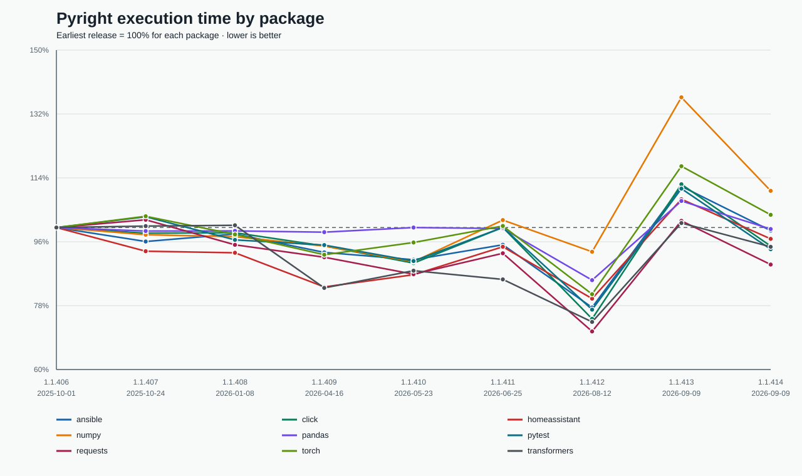
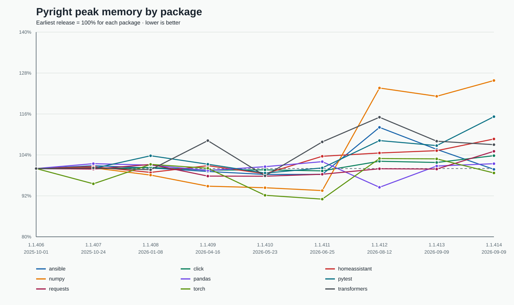

Execution time

Peak memory

Methodology
Each point is one measured run on a GitHub-hosted Ubuntu runner and is normalized to that package's earliest release. Releases use the same package commits, check paths, Python version, memory limit, and dependency-isolation mode. Separate hosted runners introduce machine variance, so use the charts for release-scale trends rather than small differences.
Profile: Python 3.14.6,
runner github-ubuntu-latest,
1 measured run per package.
Release runs
| Version | Published | Packages measured | Measured at |
|---|---|---|---|
| 1.1.406 | 2025-10-01 | 9 | 2026-09-14T21:39:59.421825+00:00 |
| 1.1.407 | 2025-10-24 | 9 | 2026-09-14T21:39:42.274572+00:00 |
| 1.1.408 | 2026-01-08 | 9 | 2026-09-14T21:39:45.460985+00:00 |
| 1.1.409 | 2026-04-16 | 9 | 2026-09-14T21:38:53.481417+00:00 |
| 1.1.410 | 2026-05-23 | 9 | 2026-09-14T21:39:07.163917+00:00 |
| 1.1.411 | 2026-06-25 | 9 | 2026-09-14T21:39:36.545744+00:00 |
| 1.1.412 | 2026-08-12 | 9 | 2026-09-14T21:35:18.452118+00:00 |
| 1.1.413 | 2026-09-09 | 9 | 2026-09-14T21:42:13.958871+00:00 |
| 1.1.414 | 2026-09-09 | 9 | 2026-09-14T21:39:51.380019+00:00 |
Back to the weekly type checker comparison | Download summarized JSON